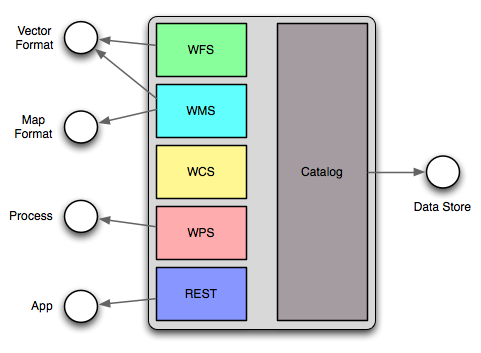

Python Extension Overview¶
The python extension provides a number of scripting hooks throughout GeoServer. These scripting hooks correspond to GeoServer “extension points”. An extension point in GeoServer is a class or interface that is designed to be implemented and dynamically loaded to provide a specific function. The classic example is a WMS or WFS output format, but GeoServer contains many extension points.
Python scripting extension hooks
Implementing a GeoServer extension point in python involves writing scripts and placing them in the appropriate directory under the GeoServer data directory. When the python extension is installed it creates the following directory structure:
GEOSERVER_DATA_DIR/
...
python/
app/
datastore/
filter/
format/
lib/
process/
Each directory correponds to a GeoServer extension point.
The app directory consists of python scripts that are intended to be invoked over http through a wsgi interface.
The datastore directory consists of python modules that implement the geotools data store interface. The geotools data store interface is the extension point used to contribute support for vector spatial data formats from shapefiles to postgis.
The filter directory consists of modules that implement filter functions. Filter functions are used in WFS queries and in SLD documents.
The format directory consists of modules that implement the various output format extension points in GeoServer. This includes WMS GetMap, GetFeatureInfo and WFS GetFeature.
The lib directory contains common modules that can be used in implementing the other types of modules. These types of modules are typically utility modules.
The process directory consists of modules that implement the geotools process interface. Implements of this extension point are used as processes in the GeoServer WPS.
Continue to Python Scripting Hooks for more details.